|
(12.39) |
The coplanar step discontinuity shown in figure 12.6 has been analysed by C. Sinclair [57].
The symmetric step change in width of the centre conductor is considered to have a similar equivalent circuit as a step of a parallel plate guide - this is a reasonable approximation to the CPW step as in the CPW the majority of the field is between the inner and outer conductors with some fringing.
The actual CPW capacitance can be expressed as
| 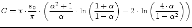 | (12.34) |
where
| 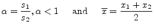 | (12.35) |
The capacitance per unit length equivalence yields
| 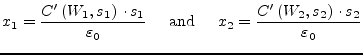 | (12.36) |
with
| 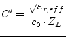 | (12.37) |
The average equivalent width 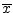 of the parallel plate guide can be adjusted with an expression that uses weighted average of the gaps 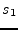 and 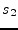. The final expression has not been discussed in [57]. The given equations are validated over the following ranges: 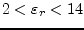, 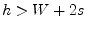 and 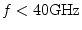.
The Z-parameters of the equivalent circuit depicted in fig. 12.6 are
| 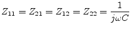 | (12.38) |
The MNA matrix representation for the AC analysis can be derived from the Z-parameters in the following way.
|
(12.39) |
The above expanded representation using the Z-parameters is necessary because the Y-parameters are infinite. During DC analysis the equivalent circuit is a voltage source between both terminals with zero voltage.
The S-parameters of the topology are
| 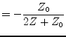 | (12.40) | |
| 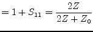 | (12.41) |